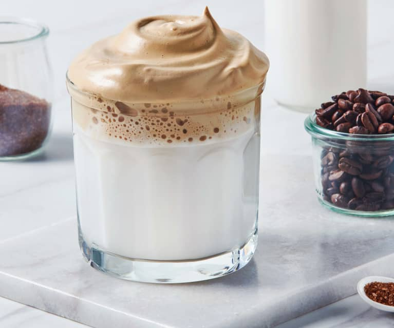

Dalgona Coffee

Want to spice up your normal cup of coffee? Try making this delicious latte recipe from Korea!
What is Dalgona Coffee? Traditionally this means a hand beaten coffee made from whipping together coffee powder, sugar and hot water until it becomes creamy then adding ontop of a either a cool or warm glass of milk. But don't worry if you're afraid of hand whisking for multiple minutes, using a milk frother or electric hand mixer works fine too!
Ingredients
What you'll need:
- 1 Tbsp of Instant Coffee
- 1 Tbsp of Sugar
- 1 Tbsp of Hot Water
- 3/4 Cup of Milk, eirther chilled or warmed
Steps
- In a bowl combine coffee, sugar and hot water. Hand whip or use electric beater/frother to mix ingredients at high speed until the mixture starts to form stiff peaks. You can check by lifting the whisk and observing how the mixture clings onto the whisk, if it's runny it will drip back down, if it's hard enough, it will stay firm to the whisk. Usually it takes 2-4 minutes for the stiff peak to form.
- Pour milk into glass, ice is optional. Scoop coffee foam to top milk
- Serve and enjoy!
Recipe by Sue from My Korean KitchenOriginal Recipe